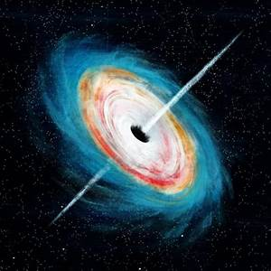

Stellar-mass black holes

A stellar-mass black hole is formed when a big star (about 10 times our sun’s size) dies, exploding in an extremely bright burst of light. This light is brighter than a galaxy and is called a supernova. A black hole formed in this way is 3-15 times bigger than our sun.
Supermassive blackholes
Scientists are still unsure how supermassive black holes are formed. They are much bigger than stellar-mass black holes. One of them would equal a 100 million suns. There is a supermassive black hole in the middle of the Milky Way. So, it gets a great deal of matter it can pull. It is called Sagittarius-A. Black holes like these power active galaxies and old ones too, which are called quasars..